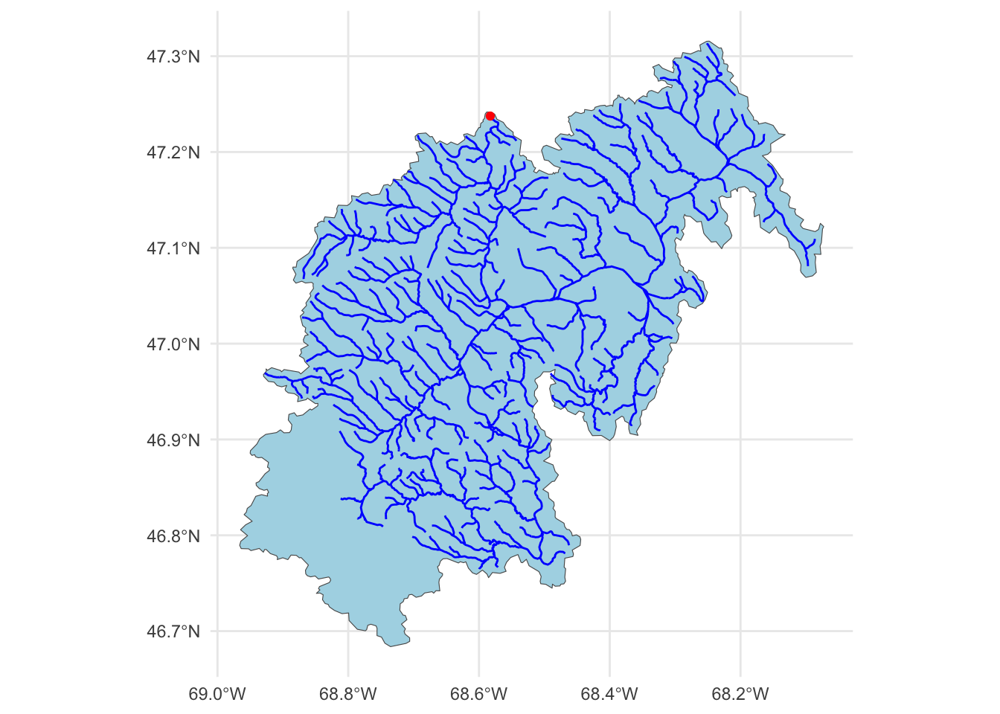
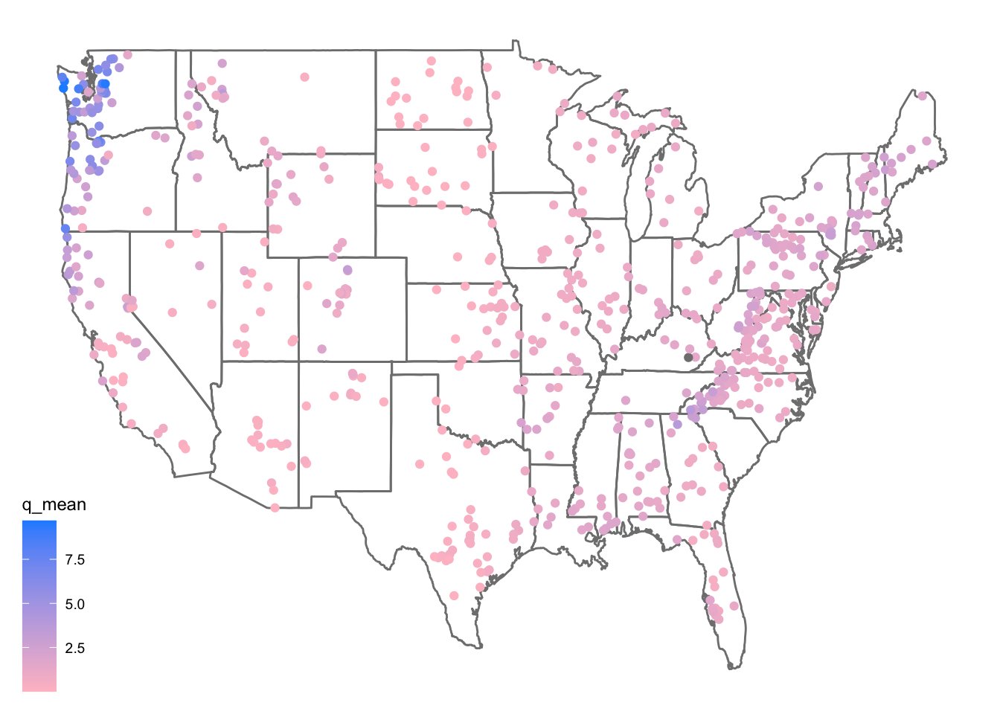
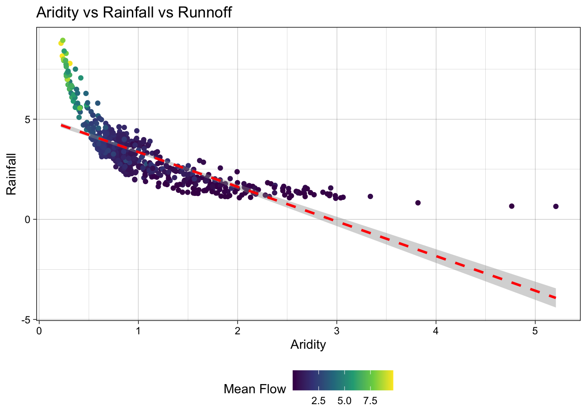
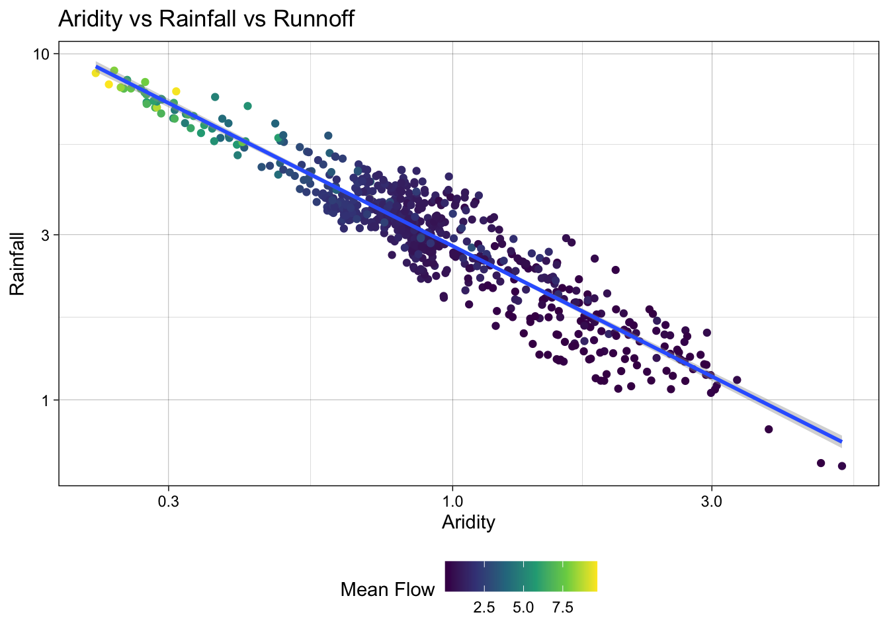
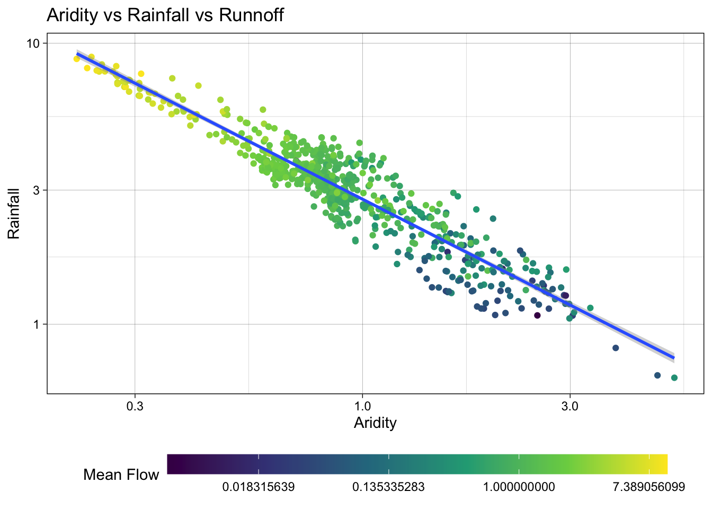
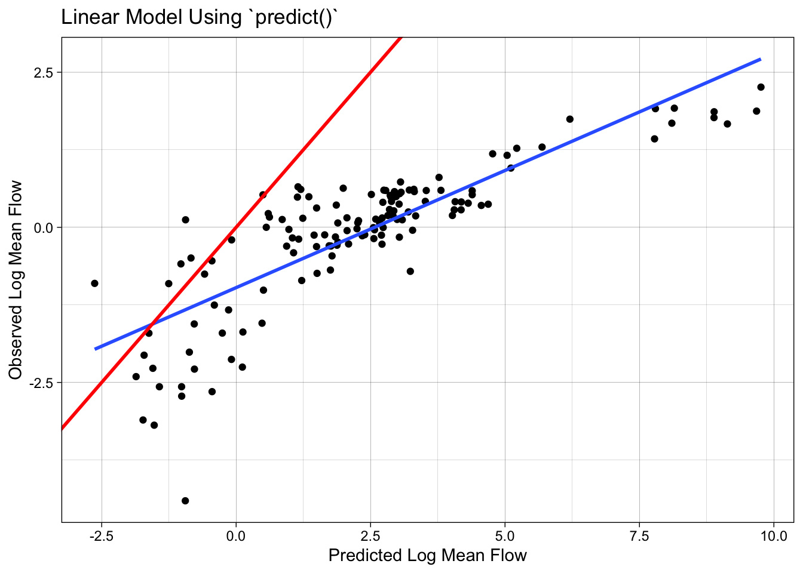
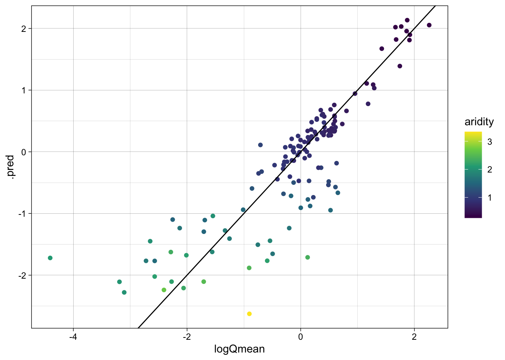
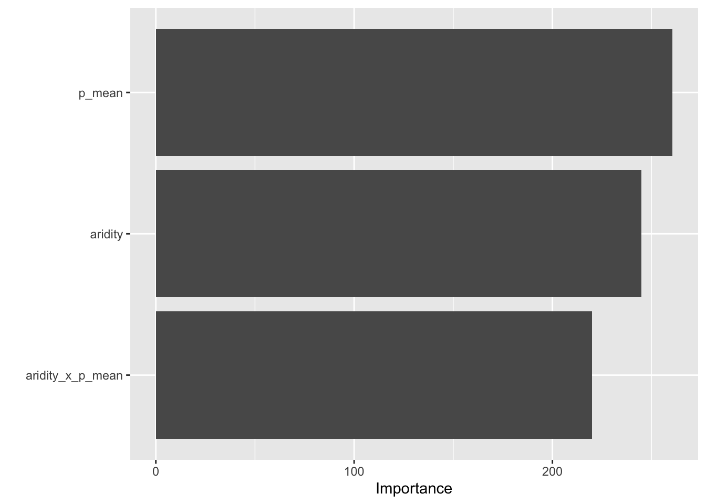
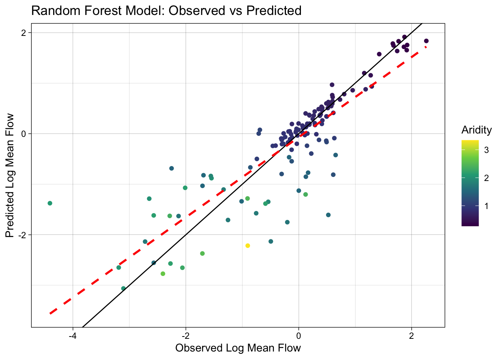

Lab 6: Machine Learning in Hydrology
Using Tidymodels & CAMELS Data
Introduction
In this lab, we will explore predictive modeling in hydrology using the tidymodels framework and the CAMELS (Catchment Attributes and Meteorology for Large-sample Studies) dataset.
What is tidymodels?
tidymodels is an R framework designed for machine learning and statistical modeling. Built on the principles of the tidyverse, tidymodels provides a consistent and modular approach to tasks like data preprocessing, model training, evaluation, and validation. By leveraging the strengths of packages such as recipes, parsnip, and yardstick, tidymodels streamlines the modeling workflow, making it easier to experiment with different models while maintaining reproducibility and interpretability.
What is the CAMELS dataset?
The CAMELS dataset is a widely used resource in hydrology and environmental science, providing data on over 500 self-draining river basins across the United States. It includes meteorological forcings, streamflow observations, and catchment attributes such as land cover, topography, and soil properties. This dataset is particularly valuable for large-sample hydrology studies, enabling researchers to develop and test models across diverse climatic and physiographic conditions.
In this lab, we will focus on predicting mean streamflow for these basins using their associated characteristics. CAMELS has been instrumental in various hydrologic and machine learning applications, including:
Calibrating Hydrologic Models – Used for parameter tuning in models like SAC-SMA, VIC, and HBV, improving regional and large-sample studies.
Training Machine Learning Models – Supports deep learning (e.g., LSTMs) and regression-based streamflow predictions, often outperforming traditional methods.
Understanding Model Behavior – Assists in assessing model generalization, uncertainty analysis, and the role of catchment attributes.
Benchmarking & Regionalization – Facilitates large-scale model comparisons and parameter transfer to ungauged basins.
Hybrid Modeling – Enhances physics-based models with machine learning for bias correction and improved hydrologic simulations.
A notable study by Kratzert et al. (2019) demonstrated that LSTMs can outperform conceptual models in streamflow prediction. As part of this lab, we will explore how to programmatically download and load the data into R.
What’s in the data?
Each record in the CAMELS dataset represents a unique river basin, identified by an outlet USGS NWIS gauge_id. The dataset contains a mix of continuous and categorical variables, including meteorological, catchment, and streamflow summaries.
The data we are going to downloaded are the basin level summaries. For example, if we looked at row 1 of the data (Gage: 01013500) all of the values are the areal average for the drainage basin seen below, while the flow metrics are associated with the outlet gage (in red):
# Use the `findNLDI` function to get the basin and flowlines for the first gauge
basin <- dataRetrieval::findNLDI(nwis = "01013500",
# Navigate the "upper tributaries" of the basin
nav = "UT",
# Return the basin and flowlines
find = c("basin", "flowlines"))
# Plot the basin, flowlines, and gauge ...
ggplot() +
geom_sf(data = basin$basin, fill = "lightblue") +
geom_sf(data = basin$UT_flowlines, color = "blue") +
geom_sf(data = basin$origin, color = "red") +
theme_minimal()
Lab Goals
In this lab, you will:
- Learn how to programatically download and access data.
- Practice using
tidymodelsfor predictive modeling. - Train and evaluate models to predict mean streamflow across the country.
- Interpret and compare model performance using
workflows.
By the end of this lab, you will have hands-on experience applying machine learning techniques to real-world data, helping to bridge the gap between statistical modeling and environmental science.
Lab Set Up
- Make a new R project where you want this work to take place.
- Create a Quarto document called
lab6.qmdin the project folder. - Create a
datadirectory in your project folder. - Instantiate a git archive with
usethis::use_git() - Connect it to a Github repository with
usethis::use_github()
Let’s start by loading the necessary libraries for this lab (you may need to install some!):
library(tidyverse)
library(tidymodels)
library(powerjoin)
library(glue)
library(vip)
library(baguette)Data Download
The CAMELS dataset is hosted by NCAR and can be accessed here under the “Individual Files” section. The root URL for all data seen on the “Individual Files” page is:
root <- 'https://gdex.ucar.edu/dataset/camels/file'Near the bottom of that page, there are many .txt files that contain the data we want. Some hold climate data for each basin, some hold geology data, some hold soil data, etc. There is also a PDF with descriptions of the columns in each file. We are going to download all of the .txt files and the PDF.
Getting the documentation PDF
We can download the documentation PDF which provides a descriptions for the various columns as many are not self-explanatory. Here we can use download.file to download the PDF to our data directory.
download.file('https://gdex.ucar.edu/dataset/camels/file/camels_attributes_v2.0.pdf',
'../data/camels_attributes_v2.0.pdf')Getting Basin characteristics
Now we want to download the .txt files that store the actual data documented in the PDF. Doing this file by file (like we did with the PDF) is possible, but lets look at a better/easier way…
- Lets create a vector storing the data types/file names we want to download:
types <- c("clim", "geol", "soil", "topo", "vege", "hydro")
glue
The glue package provides an efficient way to interpolate and manipulate strings. It is particularly useful for dynamically constructing text, formatting outputs, and embedding R expressions within strings.
Key Features of glue:
- String Interpolation: Embed R expressions inside strings using
{}. - Improved Readability: Eliminates the need for cumbersome
paste(),paste0()andsprintf()commands. - Multi-line Strings: Easily handle multi-line text formatting.
- Safe and Efficient: Optimized for performance and readability.
Basic Usage
- To use
glue, you need to load the package and then call theglue()function with the desired string template. You can embed R expressions within curly braces{}to interpolate values into the string.
class <- "ESS 330"
year <- 2024
glue("We are taking {class} together in {year}")We are taking ESS 330 together in 2024Multiples
- You can also use glue to interpolate multiple values at once
classes <- c("ESS 330", "ESS 523c")
glue("We are taking {classes} together in {year}")We are taking ESS 330 together in 2024
We are taking ESS 523c together in 2024- Using
glue, we can construct the needed URLs and file names for the data we want to download:
# Where the files live online ...
remote_files <- glue('{root}/camels_{types}.txt')
# where we want to download the data ...
local_files <- glue('data/camels_{types}.txt')- Now we can download the data:
walk2comes from thepurrrpackage and is used to apply a function to multiple arguments in parallel (much likemap2works over paired lists). Here, we are askingwalk2to pass the first element ofremote_filesand the first element oflocal_filesto thedownload.filefunction to download the data, and settingquiet = TRUEto suppress output. The process is then iterated for the second element of each vector, and so on.
walk2(remote_files, local_files, download.file, quiet = TRUE)- Once downloaded, the data can be read it into R using
readr::read_delim(), again instead of applying this to each file individually, we can usemapto apply the function to each element of thelocal_fileslist.
# Read and merge data
camels <- map(local_files, read_delim, show_col_types = FALSE) - This gives us a list of data.frames, one for each file that we want to merge into a single table. So far in class we have focused on *_join functions to merge data based on a primary and foreign key relationship.
In this current list, we have >2 tables, but, have a shared column called gauge_id that we can use to merge the data. However, since we have more then a left and right hand table, we need a more robust tool. We will use the powerjoin package to merge the data into a single data frame. powerjoin is a flexible package for joining lists of data.frames. It provides a wide range of join types, including inner, left, right, full, semi, anti, and cross joins making it a versatile tool for data manipulation and analysis, and one that should feel familiar to users of dplyr.
In this case, we are join to merge every data.frame in the list (n = 6) by the shared gauge_id column. Since we want to keep all data, we want a full join.
camels <- power_full_join(camels ,by = 'gauge_id')
Note
Alternatively, we could have read straight form the urls. Strongly consider the implications of this approach as the longevity and persistence of the data is not guaranteed.
# Read and merge data
camels <- map(remote_files, read_delim, show_col_types = FALSE) |>
power_full_join(by = 'gauge_id')Question 1: Your Turn (10 points)
Exploratory Data Analysis
First, lets make a map of the sites. Use the borders() ggplot function to add state boundaries to the map and initially color the points by the mean flow (q_mean) at each site.
ggplot(data = camels, aes(x = gauge_lon, y = gauge_lat)) +
borders("state", colour = "gray50") +
geom_point(aes(color = q_mean)) +
scale_color_gradient(low = "pink", high = "dodgerblue") +
ggthemes::theme_map()
We can take a moment here to are learn a few new things about ggplot2!
Color scales
In ggplot, sometimes you want different things (like bars, dots, or lines) to have different colors. But how does R know which colors to use? That’s where color scales come in!
scales can be used to map data values to colors (scale_color_*) or fill aesthetics (scale_fill_*). There are two main types of color scales:
- Discrete color scales – for things that are categories, like “apples,” “bananas,” and “cherries.” Each gets its own separate color.
scale_color_manual(values = c("red", "yellow", "pink")) #lets you pick your own colors.Or
scale_color_brewer(palette = "Set1") #uses a built-in color set.- Continuous color scales – for numbers, like temperature (cold to hot) or height (short to tall). The color changes smoothly.
scale_color_gradient(low = "blue", high = "red") #makes small numbers blue and big numbers red.Question 2: Your Turn (10 points)
Model Preparation
As an initial analysis, lets look at the relationship between aridity, rainfall and mean flow. First, lets make sure there is not significant correlation between these variables. Here, we make sure to drop NAs and only view the 3 columns of interest.
camels |>
select(aridity, p_mean, q_mean) |>
drop_na() |>
cor() aridity p_mean q_mean
aridity 1.0000000 -0.7550090 -0.5817771
p_mean -0.7550090 1.0000000 0.8865757
q_mean -0.5817771 0.8865757 1.0000000As expected, there is a strong correlation between rainfall and mean flow, and an inverse correlation between aridity and rainfall. While both are high, we are going see if we can build a model to predict mean flow using aridity and rainfall.
Visual EDA
- Lets start by looking that the 3 dimensions (variables) of this data. We’ll start with a XY plot of aridity and rainfall. We are going to use the
scale_color_viridis_c()function to color the points by theq_meancolumn. This scale functions maps the color of the points to the values in theq_meancolumn along the viridis continuous (c) palette. Because ascale_color_*function is applied, it maps to the known color aesthetic in the plot.
# Create a scatter plot of aridity vs rainfall
ggplot(camels, aes(x = aridity, y = p_mean)) +
# Add points colored by mean flow
geom_point(aes(color = q_mean)) +
# Add a linear regression line
geom_smooth(method = "lm", color = "red", linetype = 2) +
# Apply the viridis color scale
scale_color_viridis_c() +
# Add a title, axis labels, and theme (w/ legend on the bottom)
theme_linedraw() +
theme(legend.position = "bottom") +
labs(title = "Aridity vs Rainfall vs Runnoff",
x = "Aridity",
y = "Rainfall",
color = "Mean Flow")`geom_smooth()` using formula = 'y ~ x'
Ok! so it looks like there is a relationship between rainfall, aridity, and rainfall but it looks like an exponential decay function and is certainly not linear.
To test a transformation, we can log transform the x and y axes using the scale_x_log10() and scale_y_log10() functions:
ggplot(camels, aes(x = aridity, y = p_mean)) +
geom_point(aes(color = q_mean)) +
geom_smooth(method = "lm") +
scale_color_viridis_c() +
# Apply log transformations to the x and y axes
scale_x_log10() +
scale_y_log10() +
theme_linedraw() +
theme(legend.position = "bottom") +
labs(title = "Aridity vs Rainfall vs Runnoff",
x = "Aridity",
y = "Rainfall",
color = "Mean Flow")`geom_smooth()` using formula = 'y ~ x'
Great! We can see a log-log relationship between aridity and rainfall provides a more linear relationship. This is a common relationship in hydrology and is often used to estimate rainfall in ungauged basins. However, once the data is transformed, the lack of spread in the streamflow data is quite evident with high mean flow values being compressed to the low end of aridity/high end of rainfall.
To address this, we can visualize how a log transform may benifit the q_mean data as well. Since the data is represented by color, rather then an axis, we can use the trans (transform) argument in the scale_color_viridis_c() function to log transform the color scale.
ggplot(camels, aes(x = aridity, y = p_mean)) +
geom_point(aes(color = q_mean)) +
geom_smooth(method = "lm") +
# Apply a log transformation to the color scale
scale_color_viridis_c(trans = "log") +
scale_x_log10() +
scale_y_log10() +
theme_linedraw() +
theme(legend.position = "bottom",
# Expand the legend width ...
legend.key.width = unit(2.5, "cm"),
legend.key.height = unit(.5, "cm")) +
labs(title = "Aridity vs Rainfall vs Runnoff",
x = "Aridity",
y = "Rainfall",
color = "Mean Flow") `geom_smooth()` using formula = 'y ~ x'
Excellent! Treating these three right skewed variables as log transformed, we can see a more evenly spread relationship between aridity, rainfall, and mean flow. This is a good sign for building a model to predict mean flow using aridity and rainfall.
Model Building
Lets start by splitting the data
First, we set a seed for reproducabilty, then transform the q_mean column to a log scale. Remember it is error prone to apply transformations to the outcome variable within a recipe. So, we’ll do it a prioi.
Once set, we can split the data into a training and testing set. We are going to use 80% of the data for training and 20% for testing with no stratification.
Additionally, we are going to create a 10-fold cross validation dataset to help us evaluate multi-model setups.
set.seed(123)
# Bad form to perform simple transformations on the outcome variable within a
# recipe. So, we'll do it here.
camels <- camels |>
mutate(logQmean = log(q_mean))
# Generate the split
camels_split <- initial_split(camels, prop = 0.8)
camels_train <- training(camels_split)
camels_test <- testing(camels_split)
camels_cv <- vfold_cv(camels_train, v = 10)Preprocessor: recipe
In lecture, we have focused on using formulas as a workflow preprocessor. Separately we have used the recipe function to define a series of data preprocessing steps. Here, we are going to use the recipe function to define a series of data preprocessing steps.
We learned quite a lot about the data in the visual EDA. We know that the q_mean, aridity and p_mean columns are right skewed and can be helped by log transformations. We also know that the relationship between aridity and p_mean is non-linear and can be helped by adding an interaction term to the model. To implement these, lets build a recipe!
# Create a recipe to preprocess the data
rec <- recipe(logQmean ~ aridity + p_mean, data = camels_train) %>%
# Log transform the predictor variables (aridity and p_mean)
step_log(all_predictors()) %>%
# Add an interaction term between aridity and p_mean
step_interact(terms = ~ aridity:p_mean) |>
# Drop any rows with missing values in the pred
step_naomit(all_predictors(), all_outcomes())Naive base lm approach:
Ok, to start, lets do what we are comfortable with … fitting a linear model to the data. First, we use prep and bake on the training data to apply the recipe. Then, we fit a linear model to the data.
# Prepare the data
baked_data <- prep(rec, camels_train) |>
bake(new_data = NULL)
# Interaction with lm
# Base lm sets interaction terms with the * symbol
lm_base <- lm(logQmean ~ aridity * p_mean, data = baked_data)
summary(lm_base)
Call:
lm(formula = logQmean ~ aridity * p_mean, data = baked_data)
Residuals:
Min 1Q Median 3Q Max
-2.91162 -0.21601 -0.00716 0.21230 2.85706
Coefficients:
Estimate Std. Error t value Pr(>|t|)
(Intercept) -1.77586 0.16365 -10.852 < 2e-16 ***
aridity -0.88397 0.16145 -5.475 6.75e-08 ***
p_mean 1.48438 0.15511 9.570 < 2e-16 ***
aridity:p_mean 0.10484 0.07198 1.457 0.146
---
Signif. codes: 0 '***' 0.001 '**' 0.01 '*' 0.05 '.' 0.1 ' ' 1
Residual standard error: 0.5696 on 531 degrees of freedom
Multiple R-squared: 0.7697, Adjusted R-squared: 0.7684
F-statistic: 591.6 on 3 and 531 DF, p-value: < 2.2e-16# Sanity Interaction term from recipe ... these should be equal!!
summary(lm(logQmean ~ aridity + p_mean + aridity_x_p_mean, data = baked_data))
Call:
lm(formula = logQmean ~ aridity + p_mean + aridity_x_p_mean,
data = baked_data)
Residuals:
Min 1Q Median 3Q Max
-2.91162 -0.21601 -0.00716 0.21230 2.85706
Coefficients:
Estimate Std. Error t value Pr(>|t|)
(Intercept) -1.77586 0.16365 -10.852 < 2e-16 ***
aridity -0.88397 0.16145 -5.475 6.75e-08 ***
p_mean 1.48438 0.15511 9.570 < 2e-16 ***
aridity_x_p_mean 0.10484 0.07198 1.457 0.146
---
Signif. codes: 0 '***' 0.001 '**' 0.01 '*' 0.05 '.' 0.1 ' ' 1
Residual standard error: 0.5696 on 531 degrees of freedom
Multiple R-squared: 0.7697, Adjusted R-squared: 0.7684
F-statistic: 591.6 on 3 and 531 DF, p-value: < 2.2e-16Where things get a little messy…
Ok so now we have our trained model lm_base and want to validate it on the test data.
Remember a models ability to predict on new data is the most important part of the modeling process. It really doesnt matter how well it does on data it has already seen!
We have to be careful about how we do this with the base R approach:
Wrong version 1: augment
The broom package provides a convenient way to extract model predictions and residuals. We can use the augment function to add predicted values to the test data. However, if we use augment directly on the test data, we will get incorrect results because the preprocessing steps defined in the recipe object have not been applied to the test data.
nrow(camels_test)[1] 135nrow(camels_train)[1] 536broom::augment(lm_base, data = camels_test)Error in `$<-`:
! Assigned data `predict(x, na.action = na.pass, ...) %>% unname()` must
be compatible with existing data.
✖ Existing data has 135 rows.
✖ Assigned data has 535 rows.
ℹ Only vectors of size 1 are recycled.
Caused by error in `vectbl_recycle_rhs_rows()`:
! Can't recycle input of size 535 to size 135.Wrong version 2: predict
The predict function can be used to make predictions on new data. However, if we use predict directly on the test data, we will get incorrect results because the preprocessing steps defined in the recipe object have not been applied to the test data.
camels_test$p2 = predict(lm_base, newdata = camels_test)
## Scales way off!
ggplot(camels_test, aes(x = p2, y = logQmean)) +
geom_point() +
# Linear fit line, no error bands
geom_smooth(method = "lm", se = FALSE, size =1) +
# 1:1 line
geom_abline(color = "red", size = 1) +
labs(title = "Linear Model Using `predict()`",
x = "Predicted Log Mean Flow",
y = "Observed Log Mean Flow") +
theme_linedraw()Warning: Using `size` aesthetic for lines was deprecated in ggplot2 3.4.0.
ℹ Please use `linewidth` instead.`geom_smooth()` using formula = 'y ~ x'
Correct version: prep -> bake -> predict
To correctly evaluate the model on the test data, we need to apply the same preprocessing steps to the test data that we applied to the training data. We can do this using the prep and bake functions with the recipe object. This ensures the test data is transformed in the same way as the training data before making predictions.
test_data <- bake(prep(rec), new_data = camels_test)
test_data$lm_pred <- predict(lm_base, newdata = test_data)Model Evaluation: statistical and visual
Now that we have the predicted values, we can evaluate the model using the metrics function from the yardstick package. This function calculates common regression metrics such as RMSE, R-squared, and MAE between the observed and predicted values.
metrics(test_data, truth = logQmean, estimate = lm_pred)# A tibble: 3 × 3
.metric .estimator .estimate
<chr> <chr> <dbl>
1 rmse standard 0.583
2 rsq standard 0.742
3 mae standard 0.390ggplot(test_data, aes(x = logQmean, y = lm_pred, colour = aridity)) +
# Apply a gradient color scale
scale_color_gradient2(low = "brown", mid = "orange", high = "darkgreen") +
geom_point() +
geom_abline(linetype = 2) +
theme_linedraw() +
labs(title = "Linear Model: Observed vs Predicted",
x = "Observed Log Mean Flow",
y = "Predicted Log Mean Flow",
color = "Aridity")
Ok so that was a bit burdensome, is really error prone (fragile), and is worthless if we wanted to test a different algorithm… lets look at a better approach!
Using a workflow instead
tidymodels provides a framework for building and evaluating models using a consistent and modular workflow. The workflows package allows you to define a series of modeling steps, including data preprocessing, model fitting, and model fitting, in a single object. This makes it easier to experiment with different models, compare performance, and ensure reproducibility.
workflows are built from a model, a preprocessor, and a execution. Here, we are going to use the linear_reg function to define a linear regression model, set the engine to lm, and the mode to regression. We then add our recipe to the workflow, fit the model to the training data, and extract the model coefficients.
# Define model
lm_model <- linear_reg() %>%
# define the engine
set_engine("lm") %>%
# define the mode
set_mode("regression")
# Instantiate a workflow ...
lm_wf <- workflow() %>%
# Add the recipe
add_recipe(rec) %>%
# Add the model
add_model(lm_model) %>%
# Fit the model to the training data
fit(data = camels_train)
# Extract the model coefficients from the workflow
summary(extract_fit_engine(lm_wf))$coefficients Estimate Std. Error t value Pr(>|t|)
(Intercept) -1.7758557 0.16364755 -10.851710 6.463654e-25
aridity -0.8839738 0.16144589 -5.475357 6.745512e-08
p_mean 1.4843771 0.15511117 9.569762 4.022500e-20
aridity_x_p_mean 0.1048449 0.07198145 1.456555 1.458304e-01Lets ensure we replicated the results from the lm_base model. How do they look to you?
# From the base implementation
summary(lm_base)$coefficients Estimate Std. Error t value Pr(>|t|)
(Intercept) -1.7758557 0.16364755 -10.851710 6.463654e-25
aridity -0.8839738 0.16144589 -5.475357 6.745512e-08
p_mean 1.4843771 0.15511117 9.569762 4.022500e-20
aridity:p_mean 0.1048449 0.07198145 1.456555 1.458304e-01Making Predictions
Now that lm_wf is a workflow, data is not embedded in the model, we can use augment with the new_data argument to make predictions on the test data.
#
lm_data <- augment(lm_wf, new_data = camels_test)
dim(lm_data)[1] 135 62Model Evaluation: statistical and visual
As with EDA, applying for graphical and statistical evaluation of the model is a key Here, we use the metrics function to extract the default metrics (rmse, rsq, mae) between the observed and predicted mean streamflow values.
We then create a scatter plot of the observed vs predicted values, colored by aridity, to visualize the model performance.
metrics(lm_data, truth = logQmean, estimate = .pred)# A tibble: 3 × 3
.metric .estimator .estimate
<chr> <chr> <dbl>
1 rmse standard 0.583
2 rsq standard 0.742
3 mae standard 0.390ggplot(lm_data, aes(x = logQmean, y = .pred, colour = aridity)) +
scale_color_viridis_c() +
geom_point() +
geom_abline() +
theme_linedraw()
Switch it up!
The real power of this approach is that we can easily switch out the models/recipes and see how it performs. Here, we are going to instead use a random forest model to predict mean streamflow. We define a random forest model using the rand_forest function, set the engine to ranger, and the mode to regression. We then add the recipe, fit the model, and evaluate the skill.
library(baguette)
rf_model <- rand_forest() %>%
set_engine("ranger", importance = "impurity") %>%
set_mode("regression")
rf_wf <- workflow() %>%
# Add the recipe
add_recipe(rec) %>%
# Add the model
add_model(rf_model) %>%
# Fit the model
fit(data = camels_train) Predictions
- Make predictions on the test data using the
augmentfunction and thenew_dataargument.
rf_data <- augment(rf_wf, new_data = camels_test)
dim(rf_data)[1] 135 61Model Evaluation: statistical and visual
Evaluate the model using the metrics function and create a scatter plot of the observed vs predicted values, colored by aridity.
metrics(rf_data, truth = logQmean, estimate = .pred)# A tibble: 3 × 3
.metric .estimator .estimate
<chr> <chr> <dbl>
1 rmse standard 0.587
2 rsq standard 0.741
3 mae standard 0.363ggplot(rf_data, aes(x = logQmean, y = .pred, colour = aridity)) +
scale_color_viridis_c() +
geom_point() +
geom_abline() +
theme_linedraw()
Awesome! We just set up a completely new model and were able to utilize all of the things we had done for the linear model. This is the power of the tidymodels framework!
That said, we still can reduce some to the repetition. Further, we are not really able to compare these models to one another as they
A workflowset approach
workflow_set is a powerful tool for comparing multiple models on the same data. It allows you to define a set of workflows, fit them to the same data, and evaluate their performance using a common metric. Here, we are going to create a workflow_set object with the linear regression and random forest models, fit them to the training data, and compare their performance using the autoplot and rank_results functions.
wf <- workflow_set(list(rec), list(lm_model, rf_model)) %>%
workflow_map('fit_resamples', resamples = camels_cv)
autoplot(wf)
rank_results(wf, rank_metric = "rsq", select_best = TRUE)# A tibble: 4 × 9
wflow_id .config .metric mean std_err n preprocessor model rank
<chr> <chr> <chr> <dbl> <dbl> <int> <chr> <chr> <int>
1 recipe_rand_fore… Prepro… rmse 0.563 0.0247 10 recipe rand… 1
2 recipe_rand_fore… Prepro… rsq 0.771 0.0259 10 recipe rand… 1
3 recipe_linear_reg Prepro… rmse 0.569 0.0260 10 recipe line… 2
4 recipe_linear_reg Prepro… rsq 0.770 0.0223 10 recipe line… 2Overall it seems the random forest model is outperforming the linear model. This is not surprising given the non-linear relationship between the predictors and the outcome :)
Final Model
rf_fin <- rand_forest() %>%
set_engine("ranger", importance = "impurity") %>%
set_mode("regression")
final <- workflow() |>
add_recipe(rec) |>
add_model(rf_fin) |>
fit(data = camels_train) Evaluation
As a last step, lets evaluate the Random Forest model’s performance in predicting streamflow using the vip, augment, and ggplot2. We’ll starts by computing variable importance (vip::vip()) to understand which predictors most influence the model.
Next, we’ll apply the trained model (final) to the test dataset using augment to append predictions to the test data.
Model performance is then assessed using metrics(), comparing the actual (logQmean) and predicted (.pred) log-transformed mean streamflow values.
Finally, a scatter plot is generated , visualizing the observed vs. predicted values, color-coded by aridity. The plot includes a 1:1 reference line (geom_abline()) to indicate perfect predictions and uses the viridis color scale to improve readability.
# VIP:
vip::vip(final)
## Predcition
rf_data <- augment(final, new_data = camels_test)
## Evaluation
metrics(rf_data, truth = logQmean, estimate = .pred)# A tibble: 3 × 3
.metric .estimator .estimate
<chr> <chr> <dbl>
1 rmse standard 0.593
2 rsq standard 0.735
3 mae standard 0.366ggplot(rf_data, aes(x = logQmean, y = .pred, colour = aridity)) +
scale_color_viridis_c() +
geom_point() +
geom_abline() +
geom_smooth(method = "lm", col = 'red', lty = 2, se = FALSE) +
theme_linedraw() +
labs(title = "Random Forest Model: Observed vs Predicted",
x = "Observed Log Mean Flow",
y = "Predicted Log Mean Flow",
color = "Aridity")`geom_smooth()` using formula = 'y ~ x'
Question 3: Your Turn! (20 points)
Question 4: Build your own (100 points)
Borrowing from the workflow presented above, build your own complete ML pipeline to predict mean streamflow using the CAMELS dataset. You can experiment with different predictors and preprocessing steps to see how they impact model performance. A successful model will have a R-squared value > 0.9. To get started, you can use the following steps as a template:
Data Spliting (15)
Recipe (15)
Define 3 models (25)
workflowset ()
With your preprocessing steps and models defined, you can now build a workflow_set object to fit and evaluate your models. This will allow you to compare the performance of different models on the same data.
Evaluation
Tune the best model
Look at VIP
Extact and Evaluate
Rubric:
**Total: 150 points
Submission:
Once you have completed the above steps, you can submit your lab for grading. The lab should be submitted as a URL to your deployed repo page. The repo should contain the lab5.qmd file with all the code, data, and output.
Good luck!